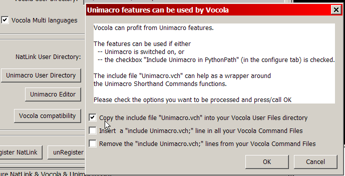

Unimacro.vch
This include file must be in the Vocola User Directory, in order to facilitate the use of many Unimacro Shorthand Commands in Vocola. Also consult this file for working examples, together with explanation of use of Unimacro Shorthand Commands in Vocola and
A listing of the Unimacro Shorthand Commands
Starting with Release 4.0 the include file Unimacro.vch is copied into the Vocola UserDirectory automatically from the sample in the Unimacro\vocola_compatibility directory. This is also happens whenever the sample file is changed (for example in a new release of NatLink/Vocola/Unimacro), so do not edit the include file for normal use.
If things do not work as expected, see the following instructions:
Include line in the command files
Moreover in each Vocola file there should be a line:
include Unimacro.vch;
or, for language versions other than English and with the option Vocola takes multi languages switched on:
include ..\Unimacro.vch;
Refreshing the include file
In most cases: - updates of the include file Unimacro.vch are copied into your Vocola UserDirectory when the sample file is changed (so newer).
- the correct include line is put in your Vocola Command Files automatically.
If not, you can try the dialog which appears after you click on Vocola compatibility in the Configure GUI Program:
 |